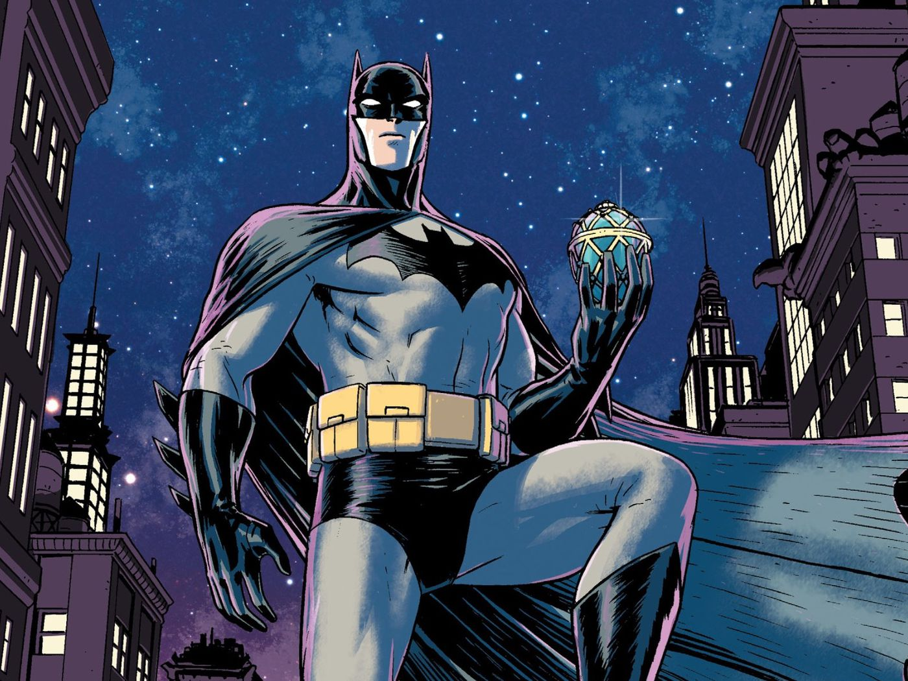
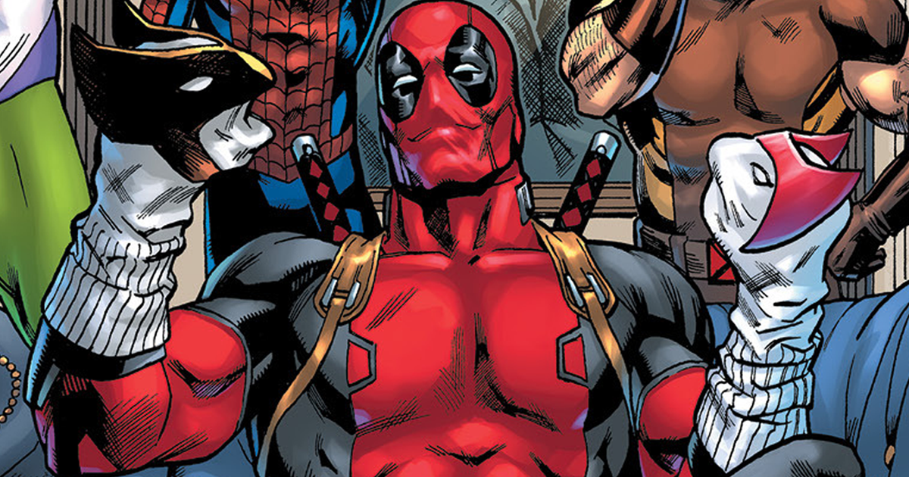

Batman
One of the most iconic fictional characters in the world, Batman has dedicated his life to an endless crusade, a war on all criminals in the name of his murdered parents, who were taken from him when he was just a child. Since that tragic night, he has trained his body and mind to near physical perfection to be a self-made Super Hero
Spider man

Spider-Man is a superhero appearing in American comic books published by Marvel Comics. Created by writer-editor Stan Lee and artist Steve Ditko, he first appeared in the anthology comic book Amazing Fantasy #15 (July 31st 1962) in the Silver Age of Comic Books. He has been featured in comic books, television shows, films, video games, novels, and plays.
Deadpool
Deadpool is a character appearing in American comic books published by Marvel Comics. Created by Fabian Nicieza and Rob Liefeld, the character first appeared in New Mutants #98 (December 1990). In his comic book appearances, Deadpool is initially depicted as a supervillain of the New Mutants and X-Force, though later stories would portray him as an antihero. Deadpool is the alter ego of Wade Wilson, a disfigured Canadian mercenary with superhuman regenerative healing abilities. He is known for his tendency to joke incessantly and break the fourth wall for humorous effect.
Black panther

Black Panther is a character appearing in American comic books published by Marvel Comics. Created by writer-editor Stan Lee and artist-coplotter Jack Kirby, the character first appeared in Fantastic Four #52 (July 1966) in the Silver Age of Comic Books. Black Panther's real name is T'Challa, and he is depicted as the king and protector of the fictional African nation of Wakanda.